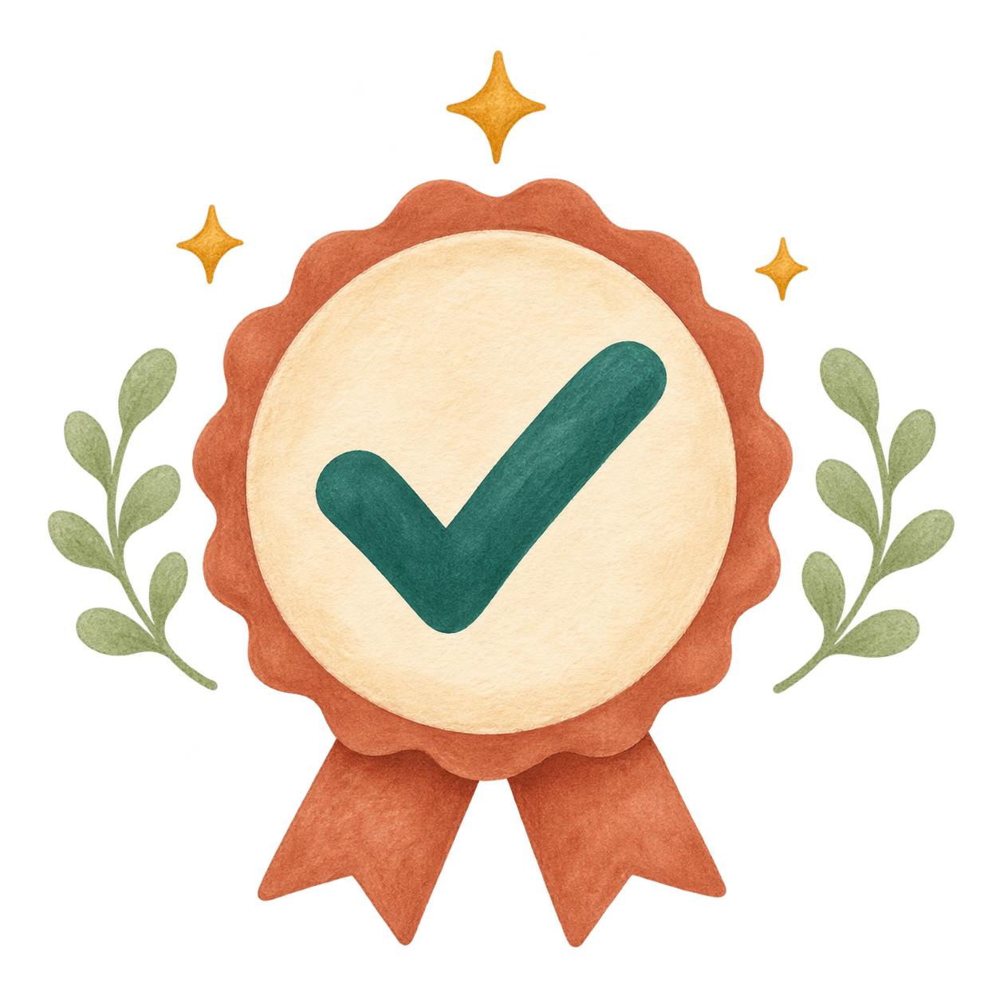

Bring it all together
Check your understanding
Practice what you’ve learned with five short questions. Choose one answer for each question, then select Check my answers. You can try again at any time.
Your results
Review the explanations below. You can return to either story for more practice.
Your perspective
Reflect on the activity
Which perspective are you using to review Home After Birth?

One step at a time
You’ve completed the activity
You’ve practiced recognizing concerns, asking questions, working through barriers, and finding support after birth.
Find support
These resources can help you find information and connect with services. They do not replace emergency care.
Your healthcare team
Ask your family doctor, nurse practitioner, midwife, or maternity team about your recovery, follow-up, and local support.
Health811 Ontario
Call 811 or visit the website for nursing advice and help finding health services.
Visit Health811Community support
Ask your local public health unit about postpartum programs. In Niagara, you can contact Niagara Parents. Check availability and eligibility.
Visit Niagara Parents